Physics কঠিন নয়। এই subject-টা আমরা যেটা জানি না, সেটা নিয়ে খুব directly সত্যটা বলে।
Physics শেখো কৌতূহল থেকে — শুধু পরীক্ষা ফাটানোর জন্য নয়। পরীক্ষা আসবে আবার চলে যাবে; কৌতূহল সারা জীবন তোমার সঙ্গেই থাকে।
Units & Measurements থেকে Semiconductor Logic Gates পর্যন্ত ছত্রিশ-টা foundational chapters। একটা প্রশ্ন দিয়ে শুরু, তারপর সেই প্রশ্নের পিছু চলতে চলতে পৌঁছে যাও আমাদের জ্ঞানের শেষ সীমানায় — যেখানে আজকের বিজ্ঞান পুরোপুরি ব্যর্থ।
Mechanics
Units and Measurements
যে কোনো জিনিস মাপতে গেলে আগে থেকে কয়েকটা Units define করে নিতে হয়। ধরো, patient-এর শরীরের তাপমাত্রা আমরা Celsius-এ মাপি। তোমার school bag-এর ওজনটা আমরা kilogram-এ মাপি। আর SpaceX-এর rocket-এর উচ্চতাটা metre-এ।

কিন্তু আমার metre আর তোমার metre exactly same হতেই হবে কি? আমরা কোন Units ব্যবহার করব, আর সেই Units ঠিক কী বোঝাবে, সেটা নিয়ে globally একমত হওয়াটা কি খুব দরকার?
একবার শুধু এই ধরনের confusion আর ভুলের জন্য একটা spacecraft ধ্বংস হয়ে গিয়েছিল (!) — কারণ দুজন engineer একই Quantity মাপার জন্য দুটো আলাদা-আলাদা Units ব্যবহার করেছিল। একজন Metric System (metre, kilogram, second) ব্যবহার করেছিল, আর অন্যজন Imperial System (feet, pound, second) ব্যবহার করেছিল। খুব basic mistake, তাই না?
এবার নিশ্চয়ই বুঝতে পারছ, Science-এ সবাই যদি একই ভাষায় কথা না বলে, তাহলে বিপদ হতে দেরি লাগে না। কিন্তু New York-এর এক metre আর Kolkata-র এক metre যে হুবহু same হবে, সেটা আমরা নিশ্চিত করব কী করে? তোমার মনে হতে পারে, কোনো নিরপেক্ষ দেশে একটা Reference Object রেখে দিলেই তো হয়। কিন্তু আসল ব্যাপার-টা হলো, Physical reference Objects দিয়ে এটা ভালোভাবে নিশ্চিত করা যায় না। একটা metal bar গরমে বা ঠান্ডায় বেঁকে যেতে পারে। আবার অনেক বছর পেরিয়ে গেলে, বয়সে metal bar-টা ক্ষয়ে যেতে পারে।
তাই আজকে আমাদের রোজকার Units-গুলোর (যেমন second) definition দেওয়া হয় atom-এর (!) সাহায্যে - specifically, Caesium atom!!
Caesium atom-এর vibration, আর আলোর speed - এগুলো সময়ের সঙ্গে বদলায় না। জায়গার সঙ্গেও বদলায় না।
কিন্তু সময় বা জায়গার সঙ্গে এগুলো বদলায় না কেন? কারণ হলো প্রত্যেকটা Caesium atom হুবহু একই রকম। Almost same নয় — একেবারে অবিকল identical - মানে exactly same. ওদের মধ্যে একটু-ও ফারাক নেই।
কিন্তু কেন? এটা আবার সম্ভব নাকি? Science-এর একটা partial উত্তর আছে। একটা atom আসলে একটা Quantum Field-এর ripple. আর সেই Field-কে নিয়ন্ত্রণ করে প্রকৃতির কিছু Fundamental Constants.
কিন্তু কেন?! ওই Constants-গুলোর value ঠিক এরকম কেন? যে মানের জন্য সব জায়গায় প্রত্যেকটা atom হুবহু same হয়?
এটা আমরা আজও জানি না!
Contact me for Online Training(Improve your Speed and Accuracy)
Motion in a Straight Line
ধরো, একজন driver দেখলো একটা বাচ্চা হঠাৎ রাস্তায় নেমে পড়েছে। সে সঙ্গে সঙ্গে brake কষলো। গাড়ি-টা কি সময়মতো থামবে?
দেখো, ব্যাপার-টা নির্ভর করছে brake চাপার ঠিক আগের মুহূর্তে গাড়ি-টা কত speed-এ চলছিল তার উপর। কিন্তু speed ব্যাপার-টা তো একটা concept - real নয়। ওটা বের করব কীভাবে? এই conceptual quantity-টা বের করতে হলে, প্রত্যেক মুহূর্তে গাড়ি-টা ঠিক কোথায় ছিল সেটা track করা দরকার। আর speed time-এর সঙ্গে কীভাবে বদলাচ্ছে, সেটা track করলে, আগে থেকেই হিসেব করে বলে দেওয়া যায় যে গাড়ি-টা ঠিক কোথায় থামবে এবং কখন — কোনো ঘটনা ঘটার আগেই।
তাহলে কি ব্যাপার-টা এতটাই সোজা? না, এটা অনেক গভীর ব্যাপার। এটা শুধু তখনই কাজ করে, যখন গাড়ি-র motion একদম smooth (continuous) হয়। রাস্তার যে কোনো দুটো জায়গার মাঝখানে সবসময় আরেকটা জায়গা উপস্থিত। তেমনি যে কোনো দুটো মুহূর্তের মাঝখানেও সবসময় আরেকটা মুহূর্ত উপস্থিত। তাই speed শব্দটার মানে হয় তখনই, যখন space আর time-কে এভাবে বার বার ভাগ করতে থাকা যায়, কোনো শেষ ছাড়া।
কিন্তু সত্যি কি space আর time-কে এভাবে অনন্তকাল ধরে ভাগ করা যায়? নাও হতে পারে!
হতে পারে যে space-এর একটা সবচেয়ে ছোট টুকরো আছে যেটার নিচে যাওয়া যায় না। হয়তো time-এরও একটা সবচেয়ে ছোট tick আছে (Planck limit) যার নিচে ভাগ করার মতো কিছু নেই।
Physicists-রা অনেক বছর ধরে এটা নিয়ে মাথা ঘামিয়েছেন। আজও কেউ অত ছোট scale-এ মাপতে পারেননি experimentally. আজও কেউ জানে না, যে Planck limit-এর কাছে motion discontinuous হয়ে যায় কিনা।
Contact me for Online Training(Improve your Speed and Accuracy)
Motion in a Plane & Projectile Motion
ধরো, ১৮৫৭ সালের প্রথম স্বাধীনতা সংগ্রামের একজন সেপাইর কাছে একটা কামান আছে, আর সামনে একটা target. Target হলো প্রায় এক kilometre দূরে একটা British army bridge. কামানটা ঠিক কোন angle-এ তাক করলে bridge-টা ভাঙবে?
ব্যাপারটা হলো, গোলাটার সামনের দিকে যাওয়া আর উপরে গিয়ে নিচের দিকে পড়া — এই দুটো problem পুরো আলাদা। গোলাটা সামনের দিকে একটা নির্দিষ্ট speed-এ এগিয়ে চলে। Gravity ওই দিকে নাক গলায়না।
একই সঙ্গে গোলাটা ওপরে ওঠে, তারপর নিচের দিকে নেমে আসে। এই উপর-নীচ ওঠা-নামা করার সময় gravity নাকটা গলায়।
আগে সামনের দিকের problem-টা solve করো। তারপর নামার problem-টা solve করো। দুটো একসঙ্গে জুড়ে দিলেই firing angle-টা নিজে থেকে বেরিয়ে আসে।
তাহলে কি রহস্য-টা এখানেই শেষ? না, রহস্যটা আসলে এখনও শুরুই হয়নি।
উপরে গিয়ে নিচের দিকে পড়ার অংশটা আবার দেখো। একই ভাবে ছোড়া একটা ভারী গোলা আর একটা হালকা গোলা ঠিক একই জায়গায় গিয়ে পড়ে। Mass-এর ওপর একেবারেই depend করে না!
এটা কোনো কাকতালীয় ব্যাপার নয়। General Relativity বলে, gravity আসলে mass-কে টেনে নামানোর কোনো Force-ই নয়।
Gravity হলো mass-এর জন্য space আর time-এর আকৃতি (geomtery) বদলে যাওয়া। Mass-এর জন্য space আর time বেঁকে যায়!!!
( Time-ও আবার বেঁকে যায় নাকি? হ্যাঁ, time-ও বেঁকে যায়। )
আর যে কোনো পড়ে যাওয়া বস্তু সেই বেঁকে যাওয়া spacetime পথ দিয়ে সবচেয়ে সোজা রাস্তায় চলে। বস্তুর নিজের mass-এর কোনো ভূমিকা এই চলার পথে থাকে না।
কিন্তু mass spacetime-কে বেঁকিয়ে দেয় কেন? এটার কারণ কিন্তু আমরা এখনও জানি না।
একটা mass তার চারপাশের space-কে ঠিক কতটা বেঁকায়, সেটা আমরা মাপতে পারি। সেই হিসেব থেকে কোনো বস্তু কীভাবে নড়বে, সেটাও খুব নিখুঁত ভাবে বের করতে পারি।
কিন্তু কোনো matter, universe-এর spacetime-কে কেন বদলে দেয়, তার উত্তর আমাদের আজও জানা নেই।
আমরা সবাই নিতান্তই মূর্খ!
Contact me for Online Training(Improve your Speed and Accuracy)
Laws of Motion
আচ্ছা একটা কথা একটু ভাবো। চাঁদ কোটি কোটি বছর ধরে পৃথিবীর চারিদিকে ঘুরে চলেছে। তার speed কমেও না, বাড়েও না। সে দূরে কখনো ছিটকে চলে যায় না। এটা কী করে সম্ভব? চাঁদকে তো পৃথিবী কোনো তার বা দড়ি দিয়ে আটকে রাখেনি?
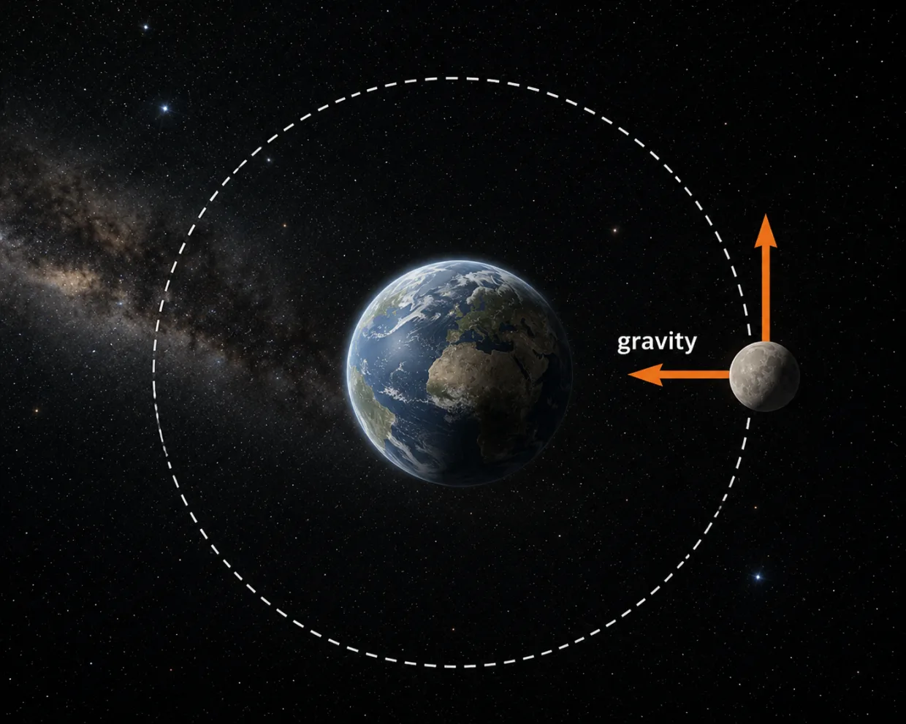
তুমি কি একটা ছোটো গোলা-কে বড়ো গোলার চারিপাশে এই ভাবে দড়ি ছাড়া ঘোরাতে পারবে? সোজা কথায় চাঁদ-টা ছিটকে বাইরে চলে যাচ্ছে না কেন? বার বার পৃথিবীর চারিদিকেই ঘুরে ফিরছে কেন? এটা একটা তাজ্জব ব্যাপার কিনা?
Newton-এর First Law বলে, কোনো কিছুকে যদি একেবারে একা ছেড়ে দেওয়া হয়, তাহলে সেটা একই speed-এ সোজা line-এ চলতেই থাকবে। কিন্তু চাঁদকে তো একা ছেড়ে দেওয়া হয়েছে বলে মনে হচ্ছে। তাহলে সেটা সোজা line-এ না গিয়ে হঠাৎ ঘুরছে কেন?
এটার মানে কোনো এক অদৃশ্য দড়ি নিশ্চয়ই চাঁদ-টাকে ধরে রেখেছে। সেই অদৃশ্য দড়ি-টার নাম Gravitation। Gravitation এক ধরনের force। Newton-এর Second Law বলে দেয়, এই ধরে রাখার জন্য ঠিক কতটা Force লাগবে।
চাঁদ-এর speed, আর সে পৃথিবী থেকে কত দূরে আছে, এই দুটো fact জানলেই এই force-টার value হিসেব করে বের করে ফেলা যায়।
গল্প-টা কি এখানেই শেষ নাকি? না, এখানে আরও একটা গভীর ব্যাপার আছে।
একটা football-কে জোরে লাথি মারলে সেটা ফট করে এগিয়ে যায়। কিন্তু একই জোরে একটা ভারী লোহার ball-কে সজোরে মারলে প্রায় নড়েই না। আমরা বলি লোহার ball-এর "INERTIA" (ইনার্শিয়া) বেশি। Inertia মানে এর নিজের motion বদলাতে ভীষণ অনিচ্ছে আছে।
Newton-এর Laws কিন্তু আমাদের বলে দেয় না যে লোহার ball-টার inertia football-এর থেকে বেশি কেন। Newton-এর Law শুধু ওই inertia জিনিসটার একটা নাম দিয়েছে - "MASS"। ওই mass-টা আমরা খুব নিখুঁত ভাবে measure করতে পারি।
কিন্তু mass (বা inertia) জিনিসটা কী? কোনো জিনিসের inertia থাকবে কেন?
আলোর (বা light) তো কোনো inertia নেই। সে কী দোষ করল?
Newton তার কোনো উত্তর দেননি।
তাহলে আমাদের আসল প্রশ্ন হলো, inertia বা mass আসে কোথা থেকে? এটা Physicists-রা আজও জানেন না। কেউ কেউ মনে করেন, পুরো space জুড়ে ছড়িয়ে থাকা কিছু অদৃশ্য Quantum Fields-এর সঙ্গে এর যোগ আছে। কিন্তু কোনো জিনিস-এর inertia আদৌ থাকবে কেন, এটা আমরা আজও জানি না।
Contact me for Online Training(Improve your Speed and Accuracy)
Friction
ধরো একটা "Formula One" গাড়ি ভয়ানক speed-এ একটা বাঁক ঘুরে গেল। তারপর হঠাৎ বৃষ্টি শুরু হলো। এবার দেখা গেল গাড়িটার tire "slip" করতে শুরু করেছে।
কিন্তু গাড়ি-টা তো একই আছে। Tire-ও একই আছে। রাস্তা-টাও বদলায়নি। তাহলে বদলালো-টা কী??
বদলালো রাস্তার Friction.
একটা microscope দিয়ে যদি তুমি রাস্তাটা দেখো, তাহলে দেখবে ওটা একেবারেই মসৃণ নয়। দেখতে পাবে অনেক খাঁজ-খন্দ ভরা একটা পাহাড়ের মতো ছবি, ছোটছোট উঁচু-নিচু জায়গা আর ফাটল দিয়ে ভরা। রাস্তা শুকনো থাকলে, tire ওই খোঁচা-খোঁচা জায়গাগুলো-কে ধরে ভালো করে grip করতে পারে। পিছলে যায়না।
কিন্তু বৃষ্টি পড়লে, জল আর কাদা ওই ফাটলগুলো ভরিয়ে দেয়। তখন উঁচু-নিচু ভাবটা কমে যায়। তখন tire আর ভালো করে grip ধরতে পারে না, তাই slip করতে শুরু করে।
মজার ব্যাপার হলো - আমরা ভাবি যত "মসৃণ" পথ হবে তত ভালো। কিন্তু আসলে কিন্তু তা নয়। রাস্তা-টা যদি একদম 100% মসৃণ হয়ে যায় - তখন কোনো গাড়িই চলতে পারবে না। Start-ই হবে না।
কারণ friction (বা grip) ছাড়া এগোনো যায়না।
Friction সব জায়গায় আছে। এটা তোমাকে slip না করে হাঁটতে সাহায্য করে। গাড়ি-কে traffic signal-এ থামতে সাহায্য করে। Aeroplane, bicycle, আর অসংখ্য machine-কে নিরাপদে কাজ করতে সাহায্য করে।
কিন্তু আমরা এখনও fundamental laws থেকে, Friction-এর value calculate করতে পারিনা। Friction এখনও একটা purely experimental quantity. এত বছর ধরে research করার পরেও, theory থেকে Friction বলে দেওয়ার ক্ষমতা আমাদের নেই। বা সহজ ভাষায়, friction-এর কোনো theoretical model আজও scientist-রা বের করতে পারেনি।
Friction কেন হয়, সেটা আমরা জানি। Friction কীভাবে মাপতে হয়, সেটাও জানি। কিন্তু শুধু "first-principles থেকে Friction derive করা" এখনও অমীমাংসিত।
Contact me for Online Training(Improve your Speed and Accuracy)
Work and Energy
ধরো, একটা comet (বা ধূমকেতু) লক্ষ-লক্ষ বছর ধরে Solar System-এর বাইরে অনেক দূরে একা-একা ঘুরে বেড়াচ্ছে। Comet-টা এত আস্তে চলছে যে দেখলে মনে হবে থেমে আছে।

তারপর একদিন একটা ব্যাপার ঘটল। Comet-টা আস্তে আস্তে সূর্যের দিকে আসতে শুরু করল। বছরের পর বছর কেটে গেল। আর প্রত্যেক বছর ওর speed-টা একটু একটু করে বাড়তে লাগল। শেষ পর্যন্ত ও এমন speed নিল যা আজও মানুষ কোনো spacecraft-কে দিতে পারেনি।
কিন্তু এত speed এল কোথা থেকে? সূর্য তো ওকে হঠাৎ করে কোনো ধাক্কা দেয়নি। নিজে নিজে এরম ভয়ানক speed-এ ছুটতে শিখল কী করে?
দেখো, ব্যাপার-টা হলো, ওই speed-টা আগে থেকেই অন্য আরেকটা রূপে লুকিয়ে ছিল।
যখন comet-টা সূর্য থেকে অনেক দূরে ছিল, তখন তার মধ্যে ছিল Potential Energy - মানে, জমে থাকা Energy. Comet-টা যত সূর্যের দিকে আসতে থাকে, তত ওই জমা Energy আস্তে আস্তে "moving energy"-তে বদলে যায়। তাই সূর্যের কাছে যত আসে, তত তার speed বেড়ে যায়।
Total Energy কখনও হঠাৎ করে তৈরি হয় না। আবার হঠাৎ করে হারিয়েও যায় না। শুধু এক রূপ থেকে আরেক রূপে বদলে যায়।
কিন্তু এমনটা হয় কেন? "Total energy" constant থাকবে কেন?
এটার একটা গভীর কারণ আছে। প্রকৃতির নিয়ম সময়ের সঙ্গে বদলায়না। Gravity আজ যেমন কাজ করছে, গতকালও তেমনি কাজ করেছিল, আর আগামীকালও তেমনি করবে। যদি প্রকৃতির নিয়ম (physical laws) সময়-এর সাথে বদলে যেত, তাহলে Energy-ও হঠাৎ করে তৈরি হতে পারত। আবার হঠাৎ করে হারিয়েও যেতে পারত।
তাহলে দেখো deeper প্রশ্ন হলো, এই মহাবিশ্ব কোটি-কোটি বছর ধরে একই নিয়ম মেনে চলছে কেন? আমাদের কাছে এটার আজও কোনো উত্তর নেই।
Contact me for Online Training(Improve your Speed and Accuracy)
Collisions
ধরো, দুটো গাড়ি খুব জোরে মুখোমুখি ধাক্কা খেল। লোহার frame দুমড়ে-মুচড়ে গেল। জানলার কাঁচ ভেঙে চুরমার হয়ে গেল। এমনকি গাড়ি দুটো আবার উল্টো দিকে ছিটকেও যেতে পারে। কিন্তু এই সব ওলট-পালটের মধ্যেও একটা জিনিস আছে যেটা constant.
সেটার নাম Momentum.
Momentum নির্ভর করে দুটো জিনিসের ওপর --- কোনো বস্তুর mass কতটা, আর সেটা কত speed-এ চলছে।
ধরো, একটা ভারী truck আস্তে আস্তে চলছে। আর একটা ছোট গাড়ি খুব জোরে ছুটে আসছে। দুটোর Momentum কিন্তু same হতে পারে।
ধাক্কা লাগার সময় গাড়ি দুটো একে অপরকে exactly same Force দিয়ে ঠেলে। একটা গাড়ি যত Momentum হারায়, অন্যটা ঠিক ততই পায়। তাই দুটো গাড়ির Momentum যোগ করলে দেখবে, ধাক্কার আগে যা ছিল, ধাক্কার পরেও ঠিক তাই আছে।
তোমার মনে হতে পারে, Energy-র ক্ষেত্রেও কি একই ব্যাপার হয়? Total energy কি constant থাকে? Physics-তো তাই বলে। কিন্তু গাড়ি দুটো তো থেমে গেল। তাহলে সব Energy-গুলো গেল কোথায়?
কোথাও যায়নি। বেশিরভাগ Energy অন্য রূপ নিয়ে নিয়েছে --- দুমড়ে যাওয়া লোহা, heat, শব্দ, আর ভেঙে যাওয়া কাঁচ। মোট Energy-র পরিমাণ একই আছে। শুধু সেটা আর kinetic energy হিসেবে নেই।
কিন্তু Momentum আরও বেশি অবাক করা জিনিস। এটা অন্য রূপ নেয় না। কোথাও লুকিয়েও পড়ে না। ধাক্কা যত জোরেই হোক না কেন, Momentum সবসময় নিখুঁতভাবে balance হয়ে থাকে।
এবার আরও আজব একটা Collision-এর কথা ভাবো। একটা particle তার antimatter যমজ-এর সঙ্গে ধাক্কা খেল। ভেঙে টুকরো টুকরো হয়ে গেল না। উল্টো দিকে ছিটকেও গেল না। দুটো-ই একেবারে vanish হয়ে গেল। তার জায়গায় শুধু এক ঝলক আলো বেরিয়ে এল। কিন্তু এখানেও Momentum একদম ঠিকঠাক balance থাকে। প্রকৃতির হিসেব কখনও ভুল হয়না।
এবার আসি Physics-এর সবচেয়ে বড় রহস্য-গুলোর একটায়। Big Bang-এর সময় সমান পরিমাণ matter আর antimatter তৈরি হওয়ার কথা ছিল। যদি সেটা হতো, তাহলে প্রায় প্রত্যেকটা particle-ই তার উল্টো সঙ্গীকে খুঁজে পেত। তারপর দুটো মিলে একে অপর-কে শেষ করে দিত। পুরো universe-এ শুধু আলো পড়ে থাকত।
কিন্তু সেটা হয়নি।
কোটি কোটি "matter anti-matter" জুটি ধ্বংস হওয়ার সময় একটা করে "matter" particle বেঁচে গিয়েছিল। ওইরকম একটা ছোট বাড়তি "matter particle"-এর বেঁচে যাওয়ার কারণে পরে সব galaxy, সব তারা, সব গ্রহ, আর সব জীবন জন্ম নিল। তুমি আর আমি-ও সেই ধ্বংসলীলায় বেঁচে যাওয়া "matter" particle থেকে তৈরি। Perfect destruction হলে, আমরা কেউই আজ থাকতাম না!
কিন্তু ওই extra "matter" particle-গুলো থাকল কেন? সবার তো নিখুঁতভাবে ধ্বংস হয়ে যাওয়ার কথা। এত বছর ধরে পরীক্ষা-নিরীক্ষা করার পরে, Scientist-রা আজও এর উত্তর জানেন না।
Contact me for Online Training(Improve your Speed and Accuracy)
Rotational Motion
ধরো, একজন footballer দারুণ একটা shot মারল। Ball-টা সামনের দিকে ছুটে গেল।
কিন্তু শুধু সামনের দিকেই গেল না - বনবন করে ঘুরতেও লাগল। Scientist-রা এই বনবন করে ঘোরা-কে model করেন কী করে?
দেখো, সোজা line-এ চলার যেমন নিয়ম আছে, তেমনি ঘোরার-ও নিয়ম আছে।
Ball-টা কত জোরে ঘুরছে, সেটাকে বলে Angular Velocity। কোনো জিনিস-কে ঘোরানো কতটা সোজা বা কতটা কঠিন, সেটা কিসের ওপর নির্ভর করে? শুধু mass-এর ওপর নয়। Mass-টা কোথায় ছড়িয়ে আছে, সেটাও খুব গুরুত্বপূর্ণ।
এটা খেলার মাঠে দারুণভাবে দেখতে পাওয়া যায়। ধরো, একজন ice skater দুহাত ছড়িয়ে বনবন করে ঘুরছে। তারপর সে নিজের দুহাত শরীরের কাছের দিকে টেনে নিল। সঙ্গে সঙ্গে দেখবে সে অনেক বেশি জোরে ঘুরতে শুরু করবে। দেখলে মনে হবে যেন হঠাৎ করে speed বেড়ে গেল।
কিন্তু total spin, যেটাকে Angular Momentum বলে, সেটা একই থাকে। দুহাত শরীরের কাছে এনে সে শুধু mass-টা কীভাবে ছড়িয়ে আছে, সেটা বদলে দিয়েছে। Angular Momentum-টা কিন্তু একই আছে। তাই ঘোরার speed-টা immediately বেড়ে যায়।
এই একই কারণে Olympics-এ diver-রা হাওয়ায় ডিগবাজি খাওয়ার আগে শরীরটা গুটিয়ে নেয় - যাতে জলে পড়ার আগে অনেকগুলো ডিগবাজি complete হয়ে যায়।
মজার ব্যাপার হলো, এই concept-টা শুধু football বা figure skating-এ আটকে নেই। এটার প্রয়োজন লাগে universe-এর সবচেয়ে রহস্যজনক বস্তু --- Black Hole --- নিয়ে research করার জন্য।
একটা Black Hole খুব সহজেই বিরাট-বিরাট তারা গিলে ফেলতে পারে। মনে হতে পারে যে Black Hole-এর ভিতরে ঢুকে গেলে সব কিছু চিরকালের মতো হারিয়ে গেল। কিন্তু একটা জিনিস হারিয়ে যায় না - angular momentum (বা spin)।
বস্তুটা ভিতরে ঢোকার আগে যদি ঘুরতে থাকে, তাহলে সেই "spin", Black Hole-এর spin বদলে দেবে। মানে, universe-এর সবচেয়ে ভয়ংকর ধ্বংসকারী Black Hole-টা "Angular Momentum"-কে মুছে ফেলতে পারে না।
কিন্তু Black Hole-এর ভিতরে পড়ে যাওয়া বাকি সবকিছুর কী হয় (যেমন Total Information)?
এত বছর ধরে গবেষণা করার পরেও Scientist-রা খুব একটা সুরাহা করতে পারেননি।
Contact me for Online Training(Improve your Speed and Accuracy)
Gravitation
দেখো, প্রত্যেক মুহূর্তে আমাদের পৃথিবী চাঁদকে নিজের দিকে টেনে আনার চেষ্টা করছে। চারশো কোটি বছরের-ও বেশি সময় ধরে এই চেষ্টা চলছে। তবুও চাঁদ এখনও পৃথিবীর ওপর আছড়ে পড়েনি। কেন?
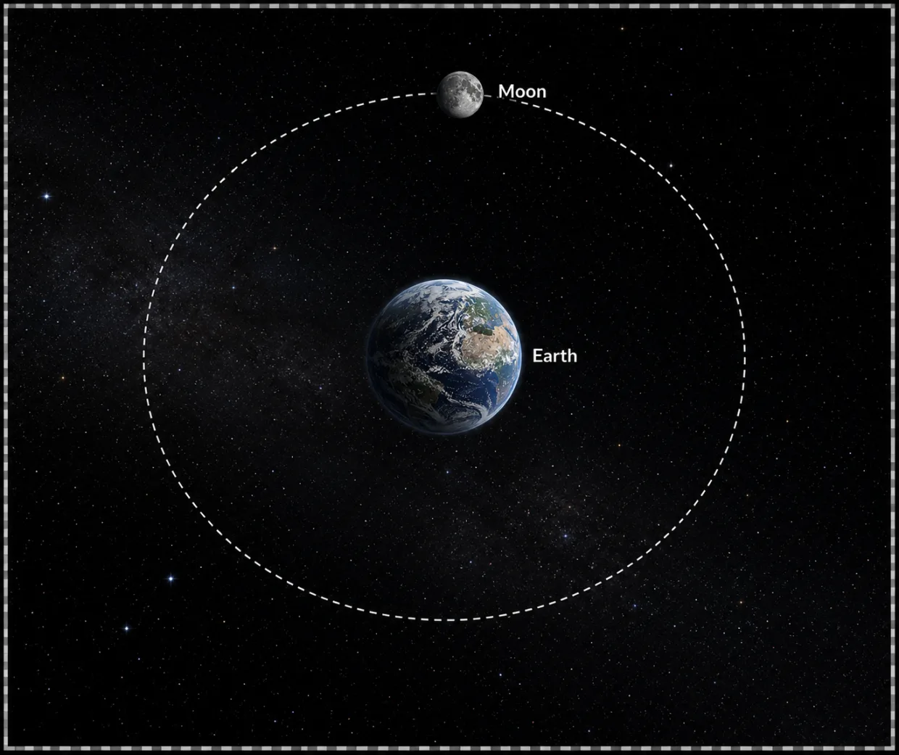
কারণ চাঁদ চুপচাপ দাঁড়িয়ে নেই। চাঁদ-ও দারুণ speed-এ এগিয়ে চলেছে - চেষ্টা করছে মহাশূন্যে মিলিয়ে যেতে। প্রত্যেক মুহূর্তে-ই পৃথিবীর Gravitational Pull (মাধ্যাকর্ষণ) ওকে নিজের দিকে টানছে। আর চাঁদ উল্টো দিকে ছিটকে চলে যেতে চাইছে। এর ফলে, কেউ-ই জিততে পারছে না। তবে এই টানাটানির একটা side effect হিসেবে চাঁদ-টা বনবন করে পৃথিবীর চারিপাশে ঘুরতে বাধ্য হচ্ছে। (এই ঘুরে বেড়ানোটাকে আমরা চাঁদের Orbit বলি।)
এবার প্রশ্ন হলো, পৃথিবী কতটা জোরে চাঁদকে টানবে, সেটা ঠিক করে দেয় কে? নিয়মটা অবাক করে দেওয়ার মতো সোজা। যে কোনো বস্তু, যার mass আছে, সে অন্য যে কোনো বস্তু (যার mass আছে) তাকে নিজের দিকে টানে। Mass যত বেশি, টানটা তত বেশি।
আর দুটো বস্তুর মধ্যে দূরত্ব যত বাড়তে থাকে, টানটা তত তাড়াতাড়ি কমতে থাকে। দূরত্ব দ্বিগুণ হলে টানটা চার গুণ কমে যায়।
কিন্তু গল্প-টা এখানেই শেষ নয়। Gravitation আবিষ্কারের অনেক বছর পরে, যখন astronomers-রা মহাকাশের galaxy-গুলোকে ভালো করে দেখার সুযোগ পেলেন, তখন একটা আজব ব্যাপার চোখে পড়ল। Galaxy-র একদম ধারের দিকের তারাগুলো এত জোরে ঘুরছে যে শুধু Gravity দিয়ে ওদের ধরে রাখা সম্ভব নয়। Newton-এর Law ঠিক হলে, ওই galaxy-গুলো ভেঙে চুরমার হয়ে যাওয়া উচিত ছিল। কিন্তু সেটা তো হচ্ছে না। Galaxy-রা সবাই খুব stable।
তার মানে কিছু একটা আমরা এখনও বুঝিনা।
Science বলে যে: হতে পারে galaxy-র মধ্যে "Dark Matter" বলে কিছু একটা "অদৃশ্য" জিনিস আছে - যার Gravity আমরা অনুভব করতে পারি, কিন্তু যেটা সরাসরি দেখা যায়না। Dark Matter (এবং Dark Energy) এটা নিয়ে অনেক scientists অনেক বড় বড় কথা বলেন - কিন্তু এগুলো basically আমাদের অজ্ঞানতাটা ঢেকে রাখার একটা উপায়। এগুলো কী, এগুলো আদৌ সত্যি আছে কিনা - আমরা কিছুই জানিনা। সব আপাতত বানানো গল্প। হয়তো একদিন প্রমাণিত হবে। অথবা হয়তো এগুলো একদিন ভুল ধারণা প্রমাণিত হবে (ঠিক যেমন সূর্য পৃথিবীর চারিপাশে ঘোরে সেটা একটা গল্প ছিল, যেটা পরে ভুল প্রমাণিত হয়েছে)।
আবার এও হতে পারে যে Newton-এর নিয়মটা ঠিক নয়। Galaxy scale-এ হয়তো law-টা change হয়ে যায়? সেটাও একটা গল্প যেটা আমরা ঠিক/ভুল প্রমাণ করতে পারিনি এখনও।
এই "Dark Matter" আর "Dark Energy" মহাবিশ্বের সবচেয়ে বড় রহস্যগুলোর মধ্যে অন্যতম। সাংঘাতিক interesting!
Contact me for Online Training(Improve your Speed and Accuracy)
Properties of Matter & Heat
Elasticity
খুব জোরে ঝড় উঠলে, পৃথিবীর সবথেকে উঁচু building-গুলো একটু দোলে। খুব বেশি নয় --- বেশিরভাগ সময় বোঝাই যায়না। কিন্তু ওই সামান্য দোলাটাও Civil Engineer-দের আগে থেকে হিসেব করে রাখতে হয়। ভুল হলে building-এ ফাটল ধরতে পারে, এমনকি ভেঙেও পড়তে পারে।

কিন্তু এই সব হিসেব engineer-রা আগে থেকে করেন কীভাবে? আগে থেকে কী করে ওরা জানেন যে building-টা কতটা হেলে পড়বে?
এই ব্যাপারটা শুধু দুটো concept-এর উপর দাঁড়িয়ে আছে।
1) First concept হলো "Stress"। এর মানে হলো কোনো Material-এর উপর কতটা চাপ দেওয়া হচ্ছে। 2) Second concept হলো Strain। এর মানে, material-টার আকৃতিটা কতটা বদলাচ্ছে (stress-এর ফলে)। Steel প্রায় একেবারেই "strain"-ed হয় না। Rubber আবার খুব সহজেই "strain"-ed হয়ে যায়।
কিন্তু এটা একটা উপর উপর গল্প। ভেতরে সত্যি হচ্ছেটা কী?
দেখো - সব materials atom দিয়ে তৈরি। এই atom-গুলো ছোট-ছোট "bond" দিয়ে একে অপরের সঙ্গে জোড়া। এই bond-গুলো কী? এরা ছোট ছোট spring-এর মতো। অল্প টান দিলে প্রত্যেকটা spring একটু লম্বা হয় - সব spring মিলে চাপটা ভাগ করে নেয়। তাই পুরো Material-টাও আস্তে আস্তে, খুব নির্দিষ্টভাবে বেঁকে যায়।
কিন্তু টানটা যদি বেশি হয়ে যায়, তখন কিছু-কিছু spring ছিঁড়ে যেতে শুরু করে। যখন অনেকগুলো spring (বা bond) ছিঁড়ে যায়, তখন Material-টা আগের অবস্থায় আর ফিরে যেতে পারে না। আমরা তখন বলি যে material-টা "permanently deformed" হয়ে গেছে (মানে দুমড়ে-মুচকে গেছে বা ছিঁড়ে গেছে)।
কিন্তু এখানেই গল্প শেষ না। একটা রহস্য এখনও বাকি।
Steel হোক, glass হোক, বা carbon হোক --- যে কোনো solid জিনিসের মধ্যেই সবসময় আমরা দেখি একটা খুঁত সব সময় হাজির! হয়তো একটা ছোট ফাটল। হয়তো একটা atom নেই। হয়তো একটা ভুল atom (impurity) বসে আছে। কিছু না কিছু খুঁত থাকবেই - ALWAYS!
Stress বেশি হলে ওই এই খুঁতগুলোর জন্যই পুরো জিনিসটা ভেঙে পড়তে শুরু করে।
প্রকৃতি কি ইচ্ছে করেই কোনো Material-কে একেবারে নিখুঁত হতে দেয় না? এই খুঁতগুলো কি সত্যি খুঁত নাকি এগুলো প্রকৃতির evolutionary methods?
আমরা এখনও ঠিক ভালোভাবে বুঝিনা।
Contact me for Online Training(Improve your Speed and Accuracy)
Fluid Statics
আচ্ছা, নদীর উপর বাঁধ দেখেছো? ধরো মুকুটমণিপুর বাঁধ। না দেখে থাকলে, সুযোগ পেলে একদিন ঘুরে এসো। আর যদি দেখে থাকো, তাহলে একটা ব্যাপার নিশ্চয়ই লক্ষ করেছো। বাঁধ-টা ওপরের দিকে বেশ সরু। কিন্তু যত নিচে নামা যায়, বিশেষ করে জলের তলায়, ততই ওটা মোটা হতে থাকে। মানে নিচের দিকটা অনেক বেশি চওড়া।
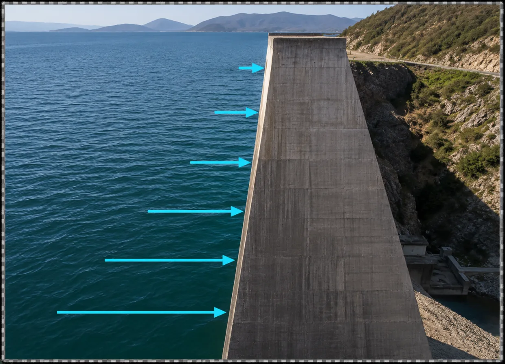
কিন্তু এমনটা কেন? নিচের দিকটা এত মোটা করে বানাতে হয় কেন?
কারণটা হলো জলের চাপ (বা pressure)। ধরো, তুমি একটা swimming pool-এ ডুব দিয়েছো। প্রথমে কিছু মনে হবে না। কিন্তু যত গভীরে যেতে থাকবে, তত কানের উপর চাপ-টা বাড়তে থাকবে।
কিন্তু কেন?
কারণ যত নিচে যাচ্ছো, তত বেশি জল তোমার মাথার ওপরে জমা হচ্ছে। আর ওই সব জলের weight নিচের জলের ওপর চাপ দিতে থাকে। তাই সোজা কথায়, যত গভীরে যাবে, তত pressure বাড়বে। ঠিক এই কারণেই বাঁধের নিচের দিকটা এত মোটা করে বানানো হয়। কারণ নিচের দিকে জলের pressure-টা অনেক বেশি। তাই বাঁধ-কেও অনেক বেশি চাপ সামলাতে হয়। কিন্তু ওপরের দিকে অত pressure নেই। তাই যত গভীর নদী, তত বাঁধের নিচের অংশের উপর চাপ বেড়ে যায়।
কিন্তু... এখানেই গল্প-টা শেষ নয়। একটু ভেবে দেখো তো। আমরা তো বললাম pressure বাড়ে কারণ ওপরের জলের weight। কিন্তু weight তো সবসময় নিচের দিকে কাজ করে, তাই না? তাহলে আমি যখন জলের নিচে ডুব দিয়ে সাঁতার কাটি, তখন শুধু মাথার উপর চাপ পড়ে না কেন? বুকের ওপরও চাপ লাগে। পিঠের ওপরও লাগে। এমনকি নিচের থেকেও চাপ আসতে থাকে।
কিন্তু হঠাৎ নিচের থেকে ওপরের দিকে চাপ আসে কেন?
দেখো, জল শুধু একদিক থেকে চাপ দেয় না। সামনের দিক থেকে দেয়। পেছনের দিক থেকেও দেয়। দুই পাশ থেকেও দেয়। ওপর থেকে দেয়। নিচের থেকেও দেয়। মানে সব দিক থেকে একই রকম pressure আসে।
তাহলে আসল প্রশ্ন-টা হলো... যদি weight শুধু নিচের দিকে কাজ করে, তাহলে ওই weight থেকে, সব দিকে pressure ছড়িয়ে পড়ছে কেন?
এর কারণ-টা হলো, জল একটা liquid - যেটাতে molecules-গুলো freely ঘুরে বেড়াতে পারে। যেখানে pressure বেশি, সেখান থেকে molecules-গুলো কম pressure-এর জায়গায় flow করতে থাকে। আর এটা ততক্ষণ চলতেই থাকে, যতক্ষণ না same height-এ pressure-টা সব জায়গায় same হয়ে যায়। তাই swimming pool-এর নিচে, বা নদীর ভেতরে, একই height-এ থাকা দুটো জায়গায় pressure একই থাকে। তাই তোমার মাথার ওপরে যে pressure পাবে, তোমার বুকের ওপরেও প্রায় একই pressure থাকবে।
কিন্তু কেন???
কারণ যদি এক জায়গায় pressure বেশি আর আরেক জায়গায় কম হয়, তাহলে জল সঙ্গে সঙ্গে বেশি pressure-এর জায়গা থেকে কম pressure-এর দিকে সরে যাবে। আর flow করতে করতে pressure-টা আবার same করে দেবে। কিন্তু... এখানেও আরও বড় প্রশ্ন উঠে আসছে।
Liquid এমন করতে চায় কেন? Same height-এ pressure same করে ফেলার এই অভ্যাস-টা এলো কোথা থেকে?
এর পিছনে একটা অনেক গভীর কারণ আছে। সেটার নাম Entropy. Entropy কী, সেটা আমরা পরে একটা আলাদা chapter-এ ভালো করে বুঝবো। কিন্তু entropy প্রকৃতির একটা fundamental নিয়ম কেন — সেই প্রশ্নের উত্তর বিজ্ঞান আজও জানে না। এটা modern science-এর একটা বিরাট রহস্য।
Contact me for Online Training(Improve your Speed and Accuracy)
Fluid Dynamics
ধরো, একটা নদী বেশ শান্তভাবে একটা চওড়া উপত্যকা দিয়ে বয়ে যাচ্ছে। তারপর হঠাৎ সামনে একটা সরু খাদ এলো। সঙ্গে সঙ্গে শান্ত জল প্রচণ্ড জোরে বইতে শুরু করলো। কিন্তু নদীর ঢাল তো বদলায়নি। তাহলে জল এত গতিবেগে হঠাৎ করে বইতে শুরু করলো কেন?
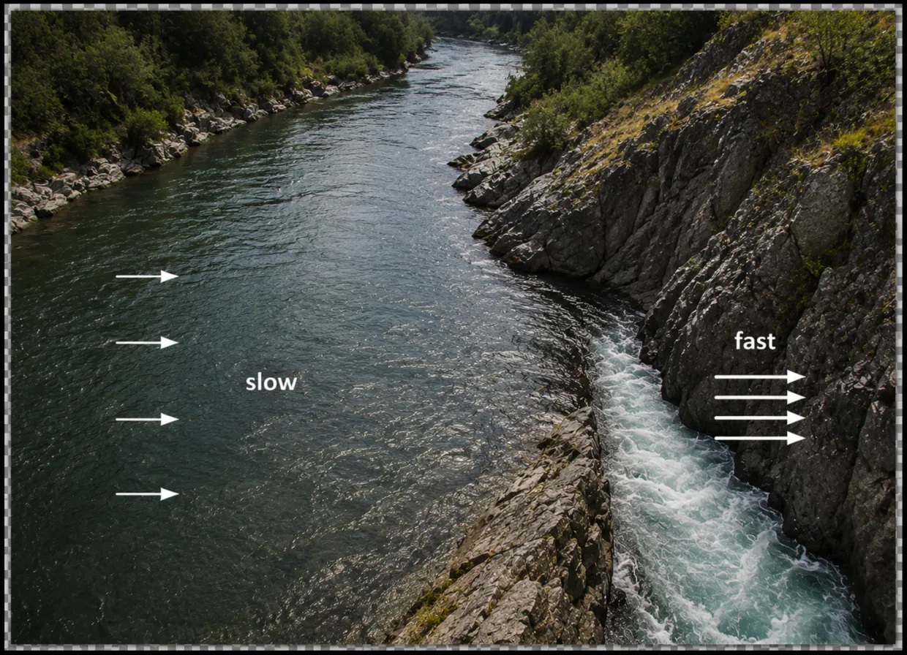
ব্যাপারটা মোটেই সোজা নয়।
ধরো, প্রত্যেক মুহূর্তে শত শত Litre জল, ওই সরু জায়গাটায় ঢুকছে। ওই একই পরিমাণ জলকে আবার সামনের দিক দিয়ে বেরিয়েও যেতে হবে - তাই না? জল তো আর হঠাৎ হারিয়ে যেতে পারে না। আবার জমে থাকারও জায়গা নেই।
তাই একমাত্র (এবং কেবল একমাত্র) উপায় হলো, জলের flow-এর speed-টা বেড়ে যাওয়া। যত সরু পথ, তত বেশি speed-এ জলকে বইতে হবে, যাতে প্রত্যেক মুহূর্তে যত পরিমাণ জল এক দিক দিয়ে ঢুকছে, সেই একই পরিমাণ জল আরেকদিক দিয়ে বেরিয়ে যেতে পারে। Physicists-রা এটাকে লেখে "equation of continuity" দিয়ে।
কিন্তু এই subject-টা এত সোজা মোটেই নয়। এটা পৃথিবীর সবচেয়ে কঠিন subject-গুলোর মধ্যে একটা।
কেন?
কারণ turbulence। জলের গতি যদি খুব বেশি হয়ে যায়, তখন smooth flow-টা ভেঙে যায়। ছোট ছোট ঘূর্ণি তৈরি হয়। জলটা ঘুরপাক খেতে থাকে। এই ঘুরপাককে বলে turbulence। হিমালয়ের নদীর প্রবল স্রোতে turbulence খুব commonly দেখা যায় (পারলে নিজের চোখে দেখে এসো একদিন)।
তোমার মনে হতে পারে, এত বছর ধরে Physics নিয়ে পড়াশোনা করার পরে, এমন রোজ দেখা একটা জিনিস আমরা নিশ্চয়ই পুরো বুঝে গেছি।
মোটেই না।
Flowing Fluid-এর Equation-গুলো আমাদের জানা। শান্ত, smooth নদীতে সেগুলো দারুণ কাজ করে। কিন্তু turbulence শুরু হলেই ব্যাপারটা বিগড়ে যায়। Equation-গুলো ভীষণ কঠিন হয়ে যায়। Solve করা যায় না। In fact, এই Equation-গুলো reliably solve করা Millennium Prize Problems-এর একটা। এটা তুমি solve করে ফেললে ঘরে বসে One Million Dollar পেয়ে যাবে।
নদী, ঝরনা, খাল-বিলের পিছনের Mathematics-এর একটা বড় অংশ আজও Science-এর অমীমাংসিত রহস্যগুলোর মধ্যে একটা।
Contact me for Online Training(Improve your Speed and Accuracy)
Surface Tension
সাবানের বুদবুদ দেখেছো নিশ্চয়ই। প্রকৃতির সবচেয়ে সুন্দর জিনিসগুলোর মধ্যে এটা একটা। সাবান জলে ring ডুবিয়ে আস্তে করে ফুঁ দিলেই একটা চকচকে বুদবুদ তৈরি হয়। তুমি যতই এলোমেলোভাবে ফুঁ দাও না কেন, দেখবে ওটা প্রায় perfect circle (বা sphere) হয়ে বেরোয়।

এমন হয় কেন?
সাবানের বুদবুদ আসলে খুব পাতলা একটা সাবান-জলের layer (বা film)। তুমি ফুঁ দেওয়ার সময় ওই সাবান-জলের layer-টার ভিতরে একটু হাওয়া আটকে যায়।
ওই বুদবুদ-টার সামনে একটা challenge: ওই হাওয়াটাকে ঘিরে রাখতে হবে কিন্তু যতটা কম "Surface Area" দিয়ে সেটা করা যায়, তত কষ্ট কম। আর mathemtically এটা প্রমাণ করা যায় যে সবচেয়ে কম "Surface Area"-এর আকৃতি হলো একটা গোলক (বা sphere)।
কিন্তু জল হঠাৎ নিজের থেকে Surface Area কমাতে চাইবে কেন?
উত্তরটা লুকিয়ে আছে জলের molecule-গুলোর মধ্যে। জলের ভিতরের দিকের molecule-এর চারিদিকে অন্য water molecules থাকে। তারা একে অপর-কে টানে।
কিন্তু একদম surface-এর molecule-এর সব দিকে কিন্তু molecules নেই। তাই সেটা একটু unrelaxed state-এ থাকে - একটু যেন tension বেশি। এই state-টার energy-ও বেশি naturally। আর প্রকৃতি এরকম unrelaxed, high energy state পছন্দ করে না। তাই জল চায় Surface-এ যত কম molecule থাকবে তত ভালো। তার ফলে Surface-টা সবসময় একটু ভিতরের দিকে টান খেতে থাকে। এই টানটাকেই বলে Surface Tension। এটা একটা force যেটা সবসময় Surface-কে আরও ছোট করার চেষ্টা করছে।
মজার ব্যাপার হলো, Surface Tension "Life creation"-এ একটা বড় ভূমিকা নিয়েছিল। কেরকম? বলছি।
দেখো, আমাদের শরীরের প্রত্যেকটা cell-এর চারপাশে একটা পাতলা membrane থাকে। ওই membrane-টা cell-এর ভিতরটাকে বাইরের দুনিয়া থেকে আলাদা করে রাখে।
এবার কোটি কোটি বছর পেছনে চলো। পৃথিবী তখন একদম নতুন। শুধু জল, পাথর, আর কিছু সাধারণ molecules। ওই molecules-গুলোর মধ্যে কিছু molecules, কোনো একভাবে, নিজেদের চারপাশে, ছোট ছোট membrane তৈরি করতে শুরু করলো। আর তার ফলে তৈরি হলো ছোট ছোট chemical বুদবুদ। হয়তো ওই ছোট বুদবুদ-গুলোর ভিতরেই জীবনের প্রথম ধাপ শুরু হয়েছিল। তারপর কোনো এক সময়, অসংখ্য chemical বুদবুদ-এর মধ্যে একটা এমন কিছু ঘটলো, যেটা আমাদের পূর্বপুরুষ হয়ে গেল।
কেন এবং কীভাবে?
সেটা আজও Science-এর সবচেয়ে বড় রহস্য-গুলোর একটা। বুদবুদ কীভাবে তৈরি করতে হয়, সেটা আমরা বুঝি। কিন্তু chemical বুদবুদ থেকে জীবন কীভাবে শুরু হলো, সেই প্রশ্নের উত্তর আজও আমাদের জানা নেই।
Contact me for Online Training(Improve your Speed and Accuracy)
Thermal Properties and Calorimetry
গরমের দুপুরে railway line-গুলো একটু লম্বা হয়ে যায়। শীতকালে যেমন ছিল, তার থেকে একটু বেশি। Change-টা খুবই সামান্য — প্রত্যেকটা rail-এর ক্ষেত্রে মাত্র কয়েক millimetre। কিন্তু কিলোমিটারের পর কিলোমিটার ধরে সেটা জুড়তে জুড়তে বেশ বড় হয়ে যায়। সেই জন্যই railway line বসানোর সময় দুটো rail-এর মাঝখানে একটু ফাঁকা জায়গা রাখা হয়। ওই ফাঁকা জায়গাটা না থাকলে গরমে Steel ফুলে উঠে নিজের ওপরেই চাপ দিতে শুরু করত, যার ফলে line বেঁকে যেত। ট্রেন চলাচলের জন্য সেটা খুব বিপজ্জনক হয়ে উঠত।
কিন্তু গরম করলে কোনো solid জিনিস expand করে কেন?
দেখো, সব জিনিস Atom দিয়ে তৈরি, আর সেই Atom-গুলো কখনো চুপচাপ বসে থাকে না। তুমি যখন কোনো জিনিস গরম করো, তখন তার Atom-গুলো আরও জোরে নড়াচড়া করতে থাকে।
এই নড়াচড়ার মাত্রাটাকেই আমরা Temperature বলি। যে জিনিসে Atom-গুলো যত বেশি জোরে নড়ছে, সেই জিনিসের Temperature তত বেশি। Temperature ব্যাপারটা clear হলো তো?
কিন্তু এখানেই আরেকটা প্রশ্ন। ধরো, space-এ একটা Atom একা একা ভেসে বেড়াচ্ছে। একটা মাত্র Atom-এর কি Temperature থাকতে পারে?
উত্তরটা simple নয়। একটা Atom একা থাকলে সেটা গরমও না, ঠান্ডাও না। Temperature এমন কোনো জিনিস নয়, যেটা একটা Atom একা একা বয়ে নিয়ে বেড়ায়। Temperature-এর concept-টা তখনই valid, যখন অসংখ্য Atom একসঙ্গে নড়াচড়া করতে থাকে।
Physicist-রা আজও ঠিক clear নন যে roughly কটা Atom হলে Temperature বলে ধারণাটার কোনো মানে থাকে না।
Contact me for Online Training(Improve your Speed and Accuracy)
Heat Transfer
আমাদের সূর্যটা পৃথিবী থেকে প্রায় পনেরো কোটি কিলোমিটার দূরে। মাঝখানে পুরো ফাঁকা space। তাহলে সূর্য আমাদের গরম রাখার জন্য Heat transfer করছে কিভাবে? সূর্য আর পৃথিবীর মাঝখানে তো কোনো হাওয়া নেই, জল নেই, কোনো connecting material-ও নেই যা দিয়ে সূর্য আর পৃথিবী জোড়া আছে। তাহলে Heat-টা আসছে কি করে পনেরো কোটি কিলোমিটার দূর থেকে?
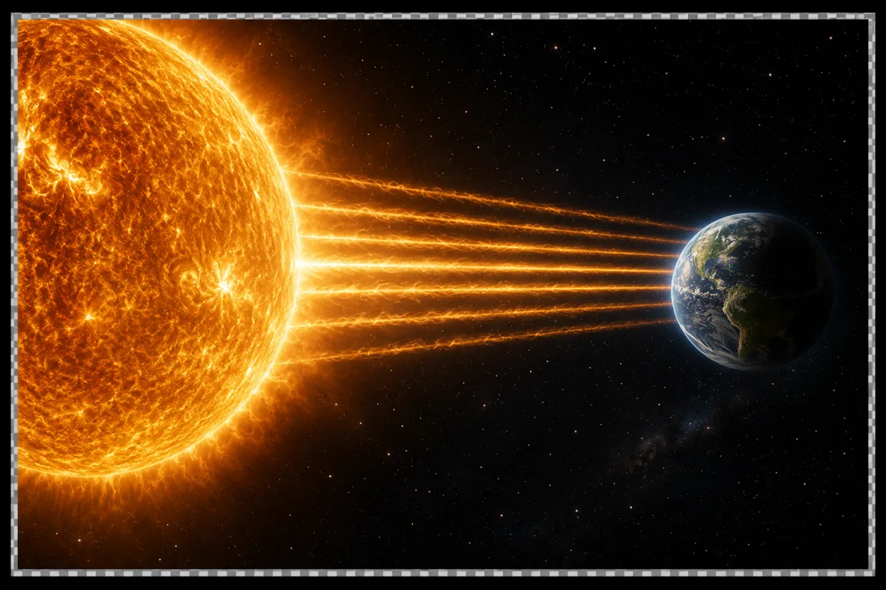
দেখো, Heat তিনভাবে এক জায়গা থেকে অন্য জায়গায় যেতে পারে।
প্রথমটা হলো Conduction — এখানে Heat একটা Atom থেকে পাশের Atom-এ চলে যায়। সেই জন্যই গরম চায়ে চামচ রেখে দিলে একটু পরে চামচটাও গরম হয়ে যায়।
দ্বিতীয়টা হলো Convection — এখানে Heat-কে বয়ে নিয়ে যায় কোনো চলমান fluid। যেমন শীতকালে heater থেকে গরম হাওয়া ওপরের দিকে উঠে যায়।
কিন্তু ফাঁকা space-এ এই দুটোর একটাও কাজ করা সম্ভব না।
সূর্য পৃথিবীকে গরম রাখে একটা তৃতীয় উপায়ে — Radiation। এখানে Heat Atom বা হাওয়ার ওপর নির্ভর করে না। এখানে Heat-কে transfer করে Electromagnetic Waves। এই Wave-গুলো electric আর magnetic fields-এর oscillation।
Electromagnetism আমরা পরে অন্য chapter-এ বুঝব।
কিন্তু এখানে আরেকটা প্রশ্ন আছে। সূর্য থেকে এরকম waves বেরোয় কেন?
দেখো, সূর্যের খুব গভীরে, প্রচণ্ড pressure আর heat-এর মাঝে, Hydrogen-এর nucleus-গুলো fuse হয়ে Helium তৈরি হয়। এই প্রক্রিয়ার নাম fusion। প্রত্যেক second-এ এমন অসংখ্য reaction ঘটে, আর সেই Energy আস্তে আস্তে core থেকে surface-এর দিকে এগিয়ে আসে। Surface-এ পৌঁছালে, ওখানকার Atom-গুলো প্রচণ্ড জোরে নড়াচড়া করতে থাকে — temperature তখন প্রায় ৫,৫০০°C। যখন দুটো Atom ধাক্কা খায়, তখন কোনো কোনো Electrons ওপরের Energy Level-এ উঠে যায়। কিন্তু Electron ওখানে বেশিক্ষণ থাকতে পারে না। নিজের থেকেই আবার নিচে নেমে আসে। নামার সময় extra Energy-টা একটা photon হিসেবে ছেড়ে দেয়। Electron যতটা নিচে নামে, Photon-টার Energy তত বেশি হয়। জিনিসটা যত বেশি গরম, ধাক্কাগুলো তত জোরে আর ঘনঘন হয়। তাই প্রত্যেক second-এ তত বেশি Electron ওপরে ওঠে, আবার নিচে নামে। আর তত বেশি photon বেরোয়। এই photon-গুলোই হলো Electromagnetic Waves-এর "particle" রূপ (Wave-Particle duality)। এরা লক্ষ লক্ষ কিলোমিটার পেরিয়ে আমাদের পৃথিবীতে ছুটে আসে। আর আমাদের ঠান্ডায় জমে মারা যাওয়া থেকে বাঁচায়!
Universe-এর প্রত্যেকটা গরম বস্তুর থেকে সবসময় electromagnetic Radiation বেরোচ্ছে। তোমার নিজের শরীরও ব্যতিক্রম নয়। কিন্তু এখানে লুকিয়ে আছে আরেকটা রহস্য।
কোটি কোটি বছর আগে, যখন পৃথিবীতে জীবন just শুরু হচ্ছিল, তখনকার সূর্য আজকের মতো অত উজ্জ্বল ছিল না। আমাদের হিসেব বলছে, তখন পৃথিবীটা এতটাই ঠান্ডা হওয়ার কথা ছিল যে সব সমুদ্র বরফ হয়ে যাওয়া উচিত ছিল।
কিন্তু সেটা হয়নি। Fossils আমাদের বলে দিচ্ছে যে তখনও নদী বইছিল, জল ছিল, আর আবহাওয়াও বেশ গরম ছিল। মানে, কোনো এক ভাবে তখনও পৃথিবী এত গরম ছিল যে সমুদ্র টিকে ছিল। আর পরে সেই সমুদ্রেই জীবনের শুরু হয়।
সূর্য তখন ম্লান ছিল। তবুও পৃথিবী গরম ছিল। কেন?
এটা আমরা আজও জানি না।
Contact me for Online Training(Improve your Speed and Accuracy)
Thermodynamics
ধরো, আজকে সকালে উঠে তুমি নিজের ঘরটা গুছিয়ে রাখলে। দেখবে এক সপ্তাহের মধ্যে ঘরটা আবার অগোছালো হয়ে যাবে। ডিম ভেঙে omelette বানানো যায়, কিন্তু omelette থেকে আবার আস্ত ডিম ফিরিয়ে আনা যায় না। এক ফোঁটা কালি জলে ফেলে দিলে সেটা আস্তে আস্তে পুরো জলে ছড়িয়ে পড়ে। কিন্তু সেই ছড়িয়ে পড়া কালি থেকে আবার এক ফোঁটা কালি ফিরিয়ে আনা যায় না। এমনটা কেন হয়? প্রকৃতি গোছানো অবস্থার থেকে অগোছালো অবস্থার দিকে এগিয়ে যেতে চায় কেন?
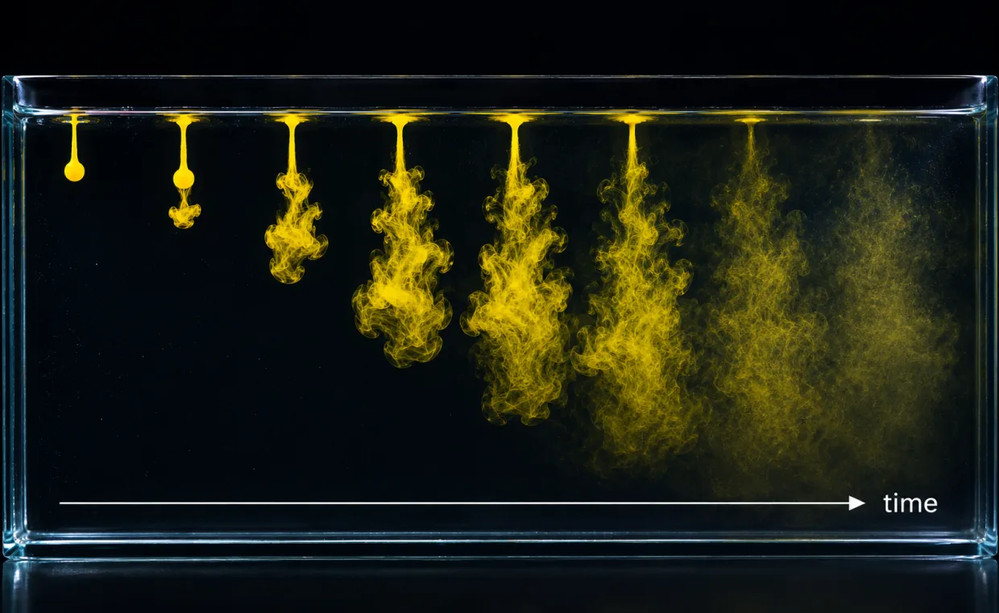
এটা বোঝার একটা উপায় হলো Entropy।
Entropy concept-টা দিয়ে আমরা মাপি যে কোনো কিছু কতটা এলোমেলো হয়ে গেছে।
ধরো, একটা ঘরের এক কোণে perfume-এর বোতল খুললে। প্রথমে সব perfume-এর molecules ওই ছোট্ট বোতলের ভিতরেই থাকে। কয়েক মিনিট পরে দেখবে সেগুলো সারা ঘরে ছড়িয়ে পড়েছে। নিজে থেকে ফিরে গিয়ে বোতলের ভিতরে ঢুকে পড়ে না কখনো।
তাহলে প্রকৃতি কি সবসময় বেশি এলোমেলো অবস্থার দিকে এগোয়? এটাই কি "সময়" জিনিসটার প্রকৃত মানে?
এটা বোঝার একটা সোজা উপায় আছে। কোনো কিছুকে গুছিয়ে রাখার উপায় খুব কম। কিন্তু এলোমেলো করে রাখার উপায় অসংখ্য। তাই কোটি কোটি particles যদি ছেড়ে দেওয়া হয়, তাহলে তাদের গুছিয়ে থাকার চেয়ে এলোমেলো হয়ে যাওয়ার প্রবণতাটা অনেক বেশি।
তার মানে এই নয় যে "গোছানো অবস্থা" কখনো তৈরি হতে পারে না। তুমি একটা সুন্দর বাড়ি বানাতে পারো, cake বানাতে পারো, নিজের ঘর গুছিয়ে রাখতে পারো। কিন্তু এগুলো করতে গেলে Energy খরচ করতে লাগে। আর এক জায়গায় যতটা গুছাও, অন্য কোনো জায়গায় তার চেয়েও বেশি "অগোছালো অবস্থা" তৈরি হয়। হতেই হবে। এটাই Entropy-র নিয়ম।
কিন্তু এখানেই Science-এর সবচেয়ে বড় রহস্যগুলোর একটা লুকিয়ে আছে।
যদি এলোমেলো অবস্থা এত বেশি সম্ভাব্য হয়, তাহলে আমাদের universe-টা শুরু থেকেই এত বিশেষভাবে সাজানো কেন? এত সুন্দর তারা, galaxy, গ্রহ, এগুলো তৈরি হওয়া সম্ভব কী করে? Big Bang-এর পরে, কালির ফোঁটার মতো সব কিছু চারিদিকে ছড়িয়ে পড়েনি কেন?
আজও কেউ জানে না।
Contact me for Online Training(Improve your Speed and Accuracy)
Kinetic Theory of Gases
১৮২৭ সালে একজন botanist একটা আজব জিনিস লক্ষ করলেন। জলের মধ্যে ভেসে থাকা ছোট্ট ছোট্ট pollen-এর দানাগুলো নিজে থেকেই একটু একটু নড়ছিল, নাচছিল — অথচ কোনো স্রোত ছিল না যেটা ওদের ঠেলছে। ওরা কিছুতেই থামছিল না। কে ওদের এভাবে নাড়িয়ে দিচ্ছিল?

প্রায় আশি বছর পরে, ১৯০৫ সালে, Albert Einstein তার উত্তর দিলেন।
জল আসলে একটা smooth continuous জিনিস নয় — এটা অসংখ্য ছোট-ছোট molecules দিয়ে তৈরি, আর প্রত্যেকটা molecule এলোমেলোভাবে সবসময় নড়াচড়া করছে। একটা molecule এত ছোট যে আলাদা করে দেখা যায় না, কিন্তু সব molecules মিলে pollen-এর দানাটাকে সব দিক থেকে ধাক্কা মারতে থাকে। সব ধাক্কা কখনো ঠিক সমান হয় না, তাই দানাটা কিছুতেই স্থির হয়ে থাকতে পারে না।
এবার gas বা liquid-কে যদি তুমি অসংখ্য খুদে particle হিসেবে ভাবতে শুরু করো, তাহলে সঙ্গে সঙ্গে দুটো খুব চেনা জিনিস বোঝা অনেক সহজ হয়ে যায়: Temperature আর Pressure।
Temperature কি? Temperature আসলে বলে দেয়, ওই particle-গুলো গড়ে কত speed-এ নড়াচড়া করছে — particle যত জোরে ছোটে, Temperature তত বেশি।
আর Pressure কি? Pressure তৈরি হয় যখন ওই particle-গুলো বারবার container-এর দেওয়ালে ধাক্কা মারে। প্রত্যেক second-এ অসংখ্য ছোট ছোট ধাক্কা মিলে একটা স্থির চাপ তৈরি করে।
কিন্তু এখানে আরেকটা প্রশ্ন আসে। যদি Pressure আসলে এতগুলো এলোমেলো ধাক্কা দিয়ে তৈরি হয়, তাহলে সেটার নিজেরও এলোমেলো হওয়ার কথা। Pressure gauge-এর reading প্রত্যেক মুহূর্তে লাফিয়ে লাফিয়ে বদলায় না কেন?
আসল কথা হলো, particles-এর সংখ্যাটা এত বিশাল যে ওই ছোট ছোট ওঠা-নামাগুলো আর বোঝা যায় না। কেরকম? ধরো, তুমি মুষলধার বৃষ্টির মধ্যে দাঁড়িয়ে আছো। প্রত্যেকটা বৃষ্টির ফোঁটা আলাদা জায়গায়, আলাদা সময়ে পড়ছে। তবুও সব মিলে একটা টানা, same শব্দ শোনা যায় - উনিশ-বিশটা আর বোঝা যায় না।
Matter-কে এভাবে atomic theory দিয়ে ভাবার ফলে Science-এ বিরাট পরিবর্তন এসেছে। এই একটা ধারণা দিয়েই বোঝা যায় balloon কেন ফুলে ওঠে, tyre-এর ভিতরে হাওয়া কেন আটকে থাকে, আবহাওয়া কেন বদলায়, আর gas গরম করলে কেন ফুলে ওঠে।
এই chapter-টা Scientists-রা এখন বেশ ভালো বোঝেন। রহস্য খুব একটা আর বাকি নেই।
Contact me for Online Training(Improve your Speed and Accuracy)
Oscillations & Waves
Simple Harmonic Motion
বাংলা অনুবাদ শীঘ্রই আসছে।

বাংলা অনুবাদ শীঘ্রই আসছে।
Contact me for Online Training(Improve your Speed and Accuracy)
Waves
বাংলা অনুবাদ শীঘ্রই আসছে।

বাংলা অনুবাদ শীঘ্রই আসছে।
Contact me for Online Training(Improve your Speed and Accuracy)
Doppler Effect
বাংলা অনুবাদ শীঘ্রই আসছে।
বাংলা অনুবাদ শীঘ্রই আসছে।
Contact me for Online Training(Improve your Speed and Accuracy)
Electricity & Magnetism
Electric Charges and Fields
বাংলা অনুবাদ শীঘ্রই আসছে।
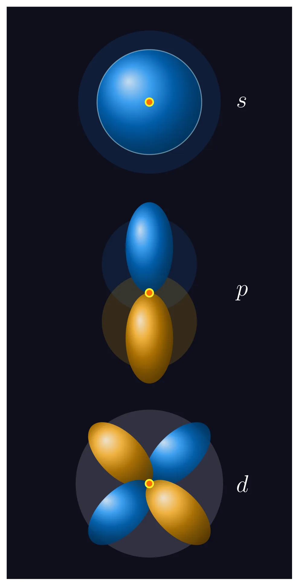
বাংলা অনুবাদ শীঘ্রই আসছে।
Contact me for Online Training(Improve your Speed and Accuracy)
Electric Potential
বাংলা অনুবাদ শীঘ্রই আসছে।
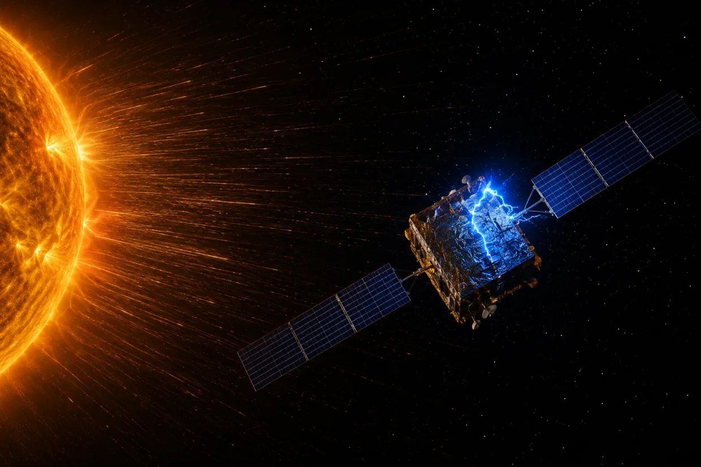
বাংলা অনুবাদ শীঘ্রই আসছে।
Contact me for Online Training(Improve your Speed and Accuracy)
Capacitors
বাংলা অনুবাদ শীঘ্রই আসছে।
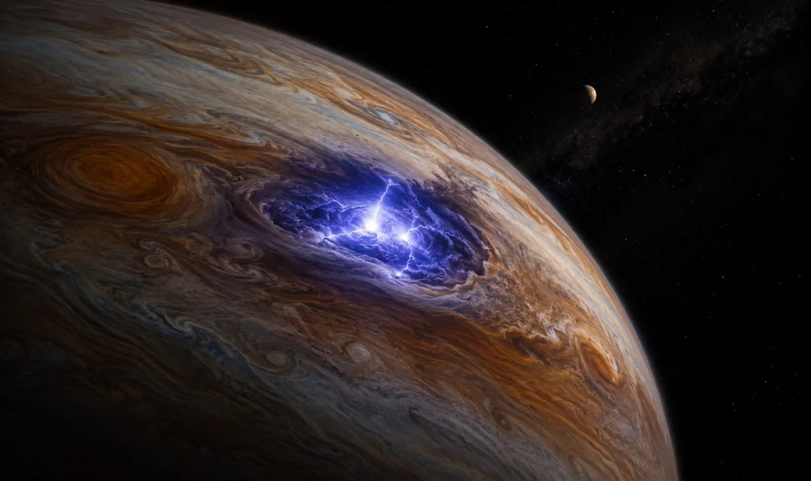
বাংলা অনুবাদ শীঘ্রই আসছে।
Contact me for Online Training(Improve your Speed and Accuracy)
Current Electricity
বাংলা অনুবাদ শীঘ্রই আসছে।
বাংলা অনুবাদ শীঘ্রই আসছে।
Contact me for Online Training(Improve your Speed and Accuracy)
Magnetic Effects of Current
বাংলা অনুবাদ শীঘ্রই আসছে।
বাংলা অনুবাদ শীঘ্রই আসছে।
Contact me for Online Training(Improve your Speed and Accuracy)
Magnetism
বাংলা অনুবাদ শীঘ্রই আসছে।
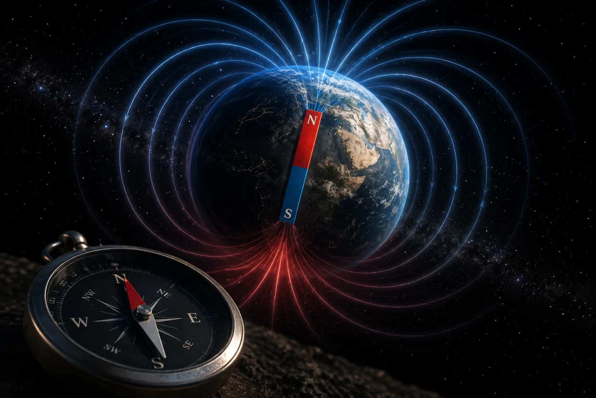
বাংলা অনুবাদ শীঘ্রই আসছে।
Contact me for Online Training(Improve your Speed and Accuracy)
Electromagnetic Induction
বাংলা অনুবাদ শীঘ্রই আসছে।

বাংলা অনুবাদ শীঘ্রই আসছে।
Contact me for Online Training(Improve your Speed and Accuracy)
Alternating Currents
বাংলা অনুবাদ শীঘ্রই আসছে।
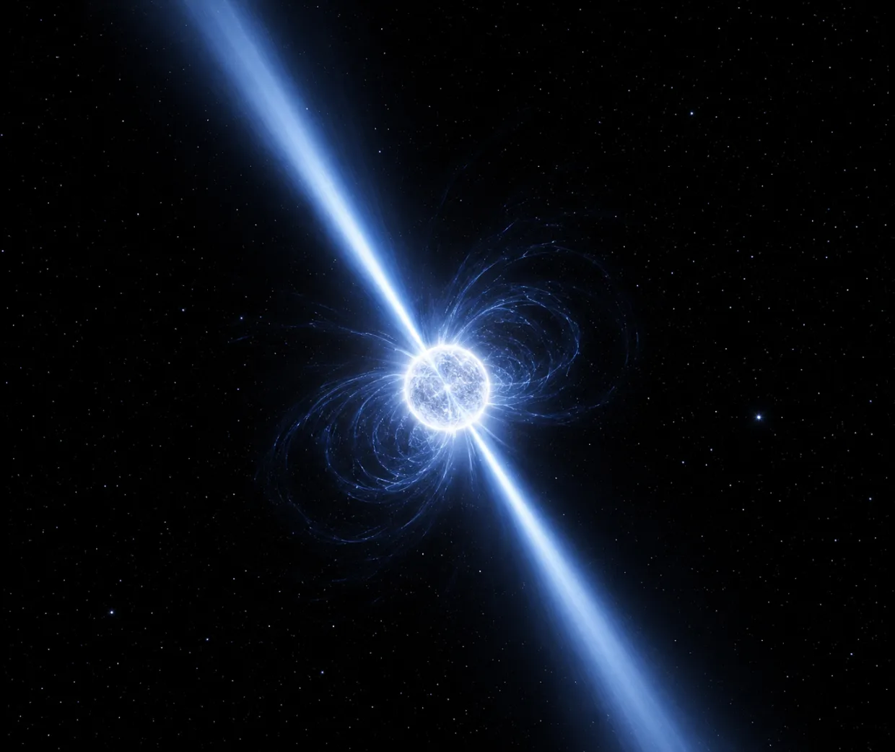
বাংলা অনুবাদ শীঘ্রই আসছে।
Contact me for Online Training(Improve your Speed and Accuracy)
Optics & Modern Physics
Electromagnetic Waves
বাংলা অনুবাদ শীঘ্রই আসছে।

বাংলা অনুবাদ শীঘ্রই আসছে।
Contact me for Online Training(Improve your Speed and Accuracy)
Ray Optics
বাংলা অনুবাদ শীঘ্রই আসছে।
বাংলা অনুবাদ শীঘ্রই আসছে।
Contact me for Online Training(Improve your Speed and Accuracy)
Wave Optics
বাংলা অনুবাদ শীঘ্রই আসছে।
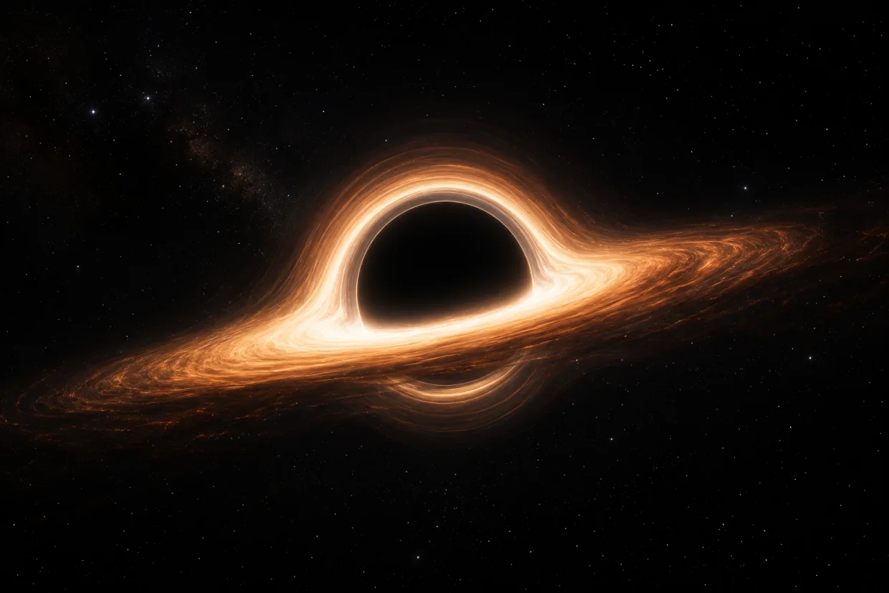
বাংলা অনুবাদ শীঘ্রই আসছে।
Contact me for Online Training(Improve your Speed and Accuracy)
Dual Nature of Radiation and Matter
বাংলা অনুবাদ শীঘ্রই আসছে।

বাংলা অনুবাদ শীঘ্রই আসছে।
Contact me for Online Training(Improve your Speed and Accuracy)
Atoms
বাংলা অনুবাদ শীঘ্রই আসছে।
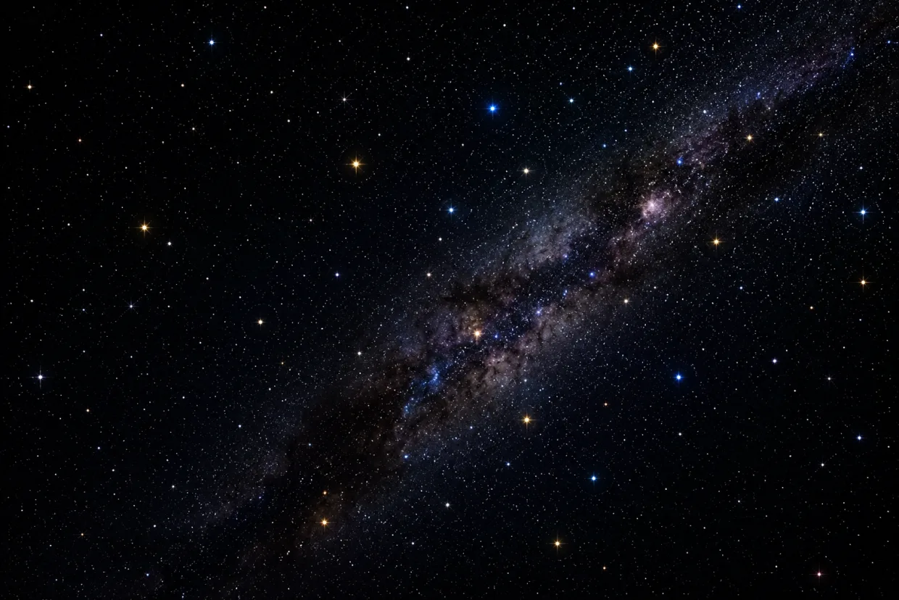
বাংলা অনুবাদ শীঘ্রই আসছে।
Contact me for Online Training(Improve your Speed and Accuracy)
Nuclei
বাংলা অনুবাদ শীঘ্রই আসছে।

বাংলা অনুবাদ শীঘ্রই আসছে।
Contact me for Online Training(Improve your Speed and Accuracy)
Semiconductor Devices
বাংলা অনুবাদ শীঘ্রই আসছে।
বাংলা অনুবাদ শীঘ্রই আসছে।
Contact me for Online Training(Improve your Speed and Accuracy)
Logic Gates
বাংলা অনুবাদ শীঘ্রই আসছে।

বাংলা অনুবাদ শীঘ্রই আসছে।
Contact me for Online Training(Improve your Speed and Accuracy)
Dr. Samudra Dasgupta
- PhD in Data Science & Quantum Computing — University of Tennessee
- Master of Science in Engineering Sciences — Harvard University (Graduate Student Fellowship)
- B.Tech (Hons.) in Electronics & Electrical Communication Engineering — IIT Kharagpur (CGPA 9.18/10)
- MBA — Indian School of Business (Young Leader Award)
- CFA (Chartered Financial Analyst)